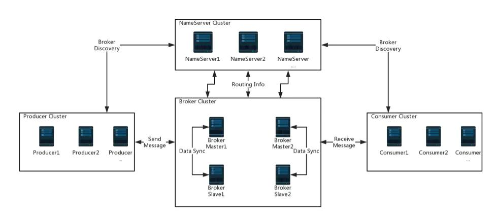

分析总结一下Dubbo的架构，通过对Dubbo、RocketMQ、Tair等架构的类比，从整体上来理解一般分布式框架、应用的组成。
Dubbo架构
Dubbo在日常开发中我们应该是接触的最多的一个框架，它的组成我们最熟悉的应该就是三部分：Provider、Consumer、Registry。以下是官方的架构图：

使用的时候，第一步我们要启动注册中心。注册中心用来注册服务、发现服务，充当着整个系统的中心点，提供指挥或者导航的作用。
第二步，启动服务提供者，服务提供者启动后会把自己注册到注册中心，告诉注册中心我可以使用了。这里服务提供者是把自己告诉给注册中心，而不是服务使用者，服务提供者不知道服务使用者是谁，也不知道服务使用者在哪里，也不知道有多少服务使用者，但是我就把自己告诉注册中心，剩下的你们自己决定怎么使用。
试想一下如果服务提供者要把自己亲自告诉服务使用者，那会是怎样的场景。
第三步，启动服务消费者，服务消费者启动后会向注册中心订阅服务，也就是向注册中心要自己需要的服务，找到需要的服务后，就可以调用服务了。
这根我们现实生活中的很多场景都类似，我们需要一个中心点，比如交通指挥中心、电力指挥中心，甚至于社区中心都可以类比。这种中心实际上还是以前的中心化管理方式，只不过我们可以让中心复制出来几个，让一个或者几个中心对外服务，其他的作为备份，用来做高可用方案，保证任一时刻中心都能对外服务。
Tair架构
我们再看下Tair的架构，最重要的也是三个：ConfigServer、DataServer、Client。下面是架构图：

其中ConfigServer就是类似传统应用系统的中心节点，DataServer会保持和ConfigServer的心跳，ConfigServer知道DataServer的信息。Client会到ConfigServer中获取DataServer信息，然后才能知道要去哪里找数据。
同样ConfigServer也是采用主备方案来保证高可用，如果从宏观上看其实它还是一个中心节点，没有变。
RocketMQ架构
接下来看看RocketMQ的架构设计，它由四部分组成：NameServer、Broker、Producer、Consumer，以下是架构图：

这里NameServer用来管理Broker，Producer和Consumer从NameServer中获取Broker的信息，整体的逻辑和上面Dubbo以及Tair类似。NameServer这次不是采用主备这种带有等级意义的关系，而是采用平等关系，Broker向所有的NameServer注册，而Producer和Consumer则选择其中一台NameServer进行通信，因为NameServer上存储的信息都一样。
这样宏观看下来其实NameServer还是中心，只不过它也是通过同时部署多台服务器来保证高可用。
Zookeeper
另外像zookeeper我们也可以理解成类似的，只不过zookeeper的中心可认为是动态中心，它的Leader角色可以进行选举更换。
小结
这样总结一下，我们使用的其实还是以前的中心化管理方式，并没有变化，变化的是我们让中心保持高可用，不再是传统意义上的单点中心。更一般的场景：中心、用户、服务商。成千上万的服务商不可能直接和上亿的用户直接打交道，否则一团乱麻，但是中间可以通过一个中心来打交道，这样就会更加有秩序了。
以上仅仅是个人的理解和观点，不对或者不恰当的地方还请指出。